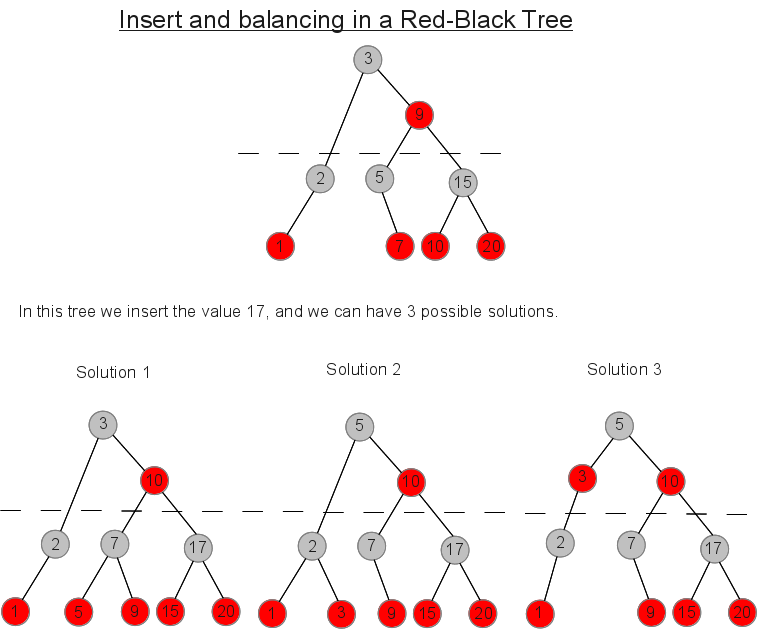

The [
Counter Tree + Suballocator ] Library
Francisco Jose Tapia Copyright © 2010-2013
Francisco Jose Tapia
1.5.- Next
improvements
This is a long term project, designed in 6 stages, this version is the finish of the stage 3.
The 6 stages are :
- Design and implementation of the countertree
- Design and implementation of suballocator
- Concurrent version of countertree and suballocator
- Design and implementation of fast logic functions (union, intersection, nor intersection) with trees,,
and design and implementation of several parallel functions of <algorithms>
- Redesign the internal algorithm used for the insertion, deletion and balancing, in order to improve the
speed, provide support for the parallel algorithms of copy,insertion, union, intersection and not
intersection with trees. It must provide support for the augmented trees.
- Augmented trees
A brief explanation of the stages 4 , 5 and 6
4.- DESIGN AND IMPLEMENTATION OF FAST LOGIC FUNCTION. PARALLEL
DESIGN OF FUNCTIONS OF <ALGORITHM>
The need of fast logic function appear when I was reading about map-reduce systems. In the <algorithms>
you have many of these functions.
But many times you use the map as index of other information, and you have several index. As result of the
search in the index you obtain a set of keys. You must combine the sets obtained, but the functions of
<algorithm> create a new set with the result of the operations. If the set used as parameter are big, the
result will be big too. And after obtain the result, destroy the parameters because don' need them. It is a
waste of memory and time.
My idea is to design the functions , but with the input passed with rvalues,the result don't need create new
elements, use the elements of the inputs. This permit reduce the memory needed, and improve the speed of the
operation.
Other idea is to include these functions in the classes set, multiset, map and multimap. If the parameter is a
reference. You can have versions with parameters references , and versions with parameters rvalues, which
permit use the internal information of the parameter for to build the result.
With the random access iterators of the countertree, it is easy to design parallel algorithms for many functions
of <algorithm>, like for_each, count, count_if .......
5.- REDESIGN OF THE INTERNAL ALGORITHM
When you design a
tree, you must develop a balanced algorithm in order to prevent a
degenerate
tree (
Tree like a linked list). You have several
types of balanced trees ( mainly Red-Black and
AVL ). That decision about the type of balance
tree have influence on the quality of the balance and the speed of the
tree. The most
used are the red-black trees. You have an excellent description with code in
“Introduction
to Algorithms” ( Cormen , Leiserson, Rivest).

But , even the same type of balance tree, ,it can be done in several ways,
In order to design an algorithm for to insert, delete and balance a red-black tree
you must take care about
1.- What of the solutions do you want
2.- How do you define the rules, which applying obtain the
desired solution.
3.- What's the cost in time of process .
4.- Benefits, advantage of this solution respect the others
When I decided add the counter to the nodes for the design
of the CounterTree, I tried to use the code showed in "Introduction to
algorithms", but was very complex the management of the counters, and decide design my own balanced algorithm
based on the 234Tree description. The result is the actual version of CounterTree.
It is 10% more or less slower than the GCC implementation, but is logic , because must manage
the pointers and the counters.
It's only a first version. I am convinced, this algorithm can be improved in the design and in the
implementation, Looking for a way for to improve the speed , I examined others implementations of Red-Black
trees, several books an mainly with the experience obtained with the
Suballocator. I decided to
change several things of the algorithm and the implementation, pursuing to improve the speed. I have this design
done on paper.
The new version include operations for to :
- Concatenate trees for the algorithm of copy parallel of a tree
- Insert a tree in the tree for the algorithm of parallel insertion in a tree
- Divide a big tree in a sequence of small sub-trees in order to be processed in the copy parallel algorithm
- Provide a catalog of operations with the nodes. ( insert, delete , rotations, swap... ) in order to
provide support to the augmented trees built inside the countertree.
6.-AUGMENTED TREES
The augmented trees are trees with additional information, which is not fixed. It must be processed and changed
when you insert, delete or move an node in the tree.
This is very useful for to maintain update the statistical information of a set of data which is continuously
changed. For to search inside a collection of ranges which are changing. For to maintains accumulators over a
values. The collection of problems which can be efficiently resolved with augmented trees is long.
The countertrees are augmented trees. You have a counter in each node which represent the number of nudes under
it. Every time you insert, delete or move a node in the tree, this information must be recalculate.
The problem is the number of operations over the data structure. If you need obtain a statistical value over a
collection of data, and need to obtain only a few times, many data structure can satisfy you requirements. The
problem is when you need to do a lot of times, by example, you have intervals, and you need to detect the
intersection between them in order to calculate a collision, in a particle simulation .
For the speed the best solution is to include the information and the process inside the
tree.
With this, you customize your
tree and obtain the maximum speed.
In the new version of the algorithm, all the internal process of the
tree in a
“catalog” of small operations like:
- Insert/delete a node in the right/left pointer of a node.
- All the rotations with nodes
- Swap of nodes directly linked and not directly linked
- Design the information to insert in the node
If you design the process to do with your augmented information for all the operations of the catalog, you can
create your augmented balanced
tree mixing the pointer and color operations with your
code for each operation.
You can have augmented trees with several concepts, like the position, accumulators and statistical operations
as are defined in the Policy Based Data Structures and in the Boost Accumulator library. In the node operation
you mix the pointers and color operations with the process of the catalog for all the augmented information
added.
The node operations have two parts, the pointers and the node color, and the augmented information. In the
countertree the first augmented information are the node counters. You can include several
augmented informations in the same tree. You compile it, and then when the node need any operation, call their
internal function, and after the functions of the augmented information of the tree.
The solution exposed can be combined with the concurrent process and the suballocators, which can improve a lot
the speed of these accumulators, statistical operations or any other idea.
 Boost C++
Libraries
Boost C++
Libraries